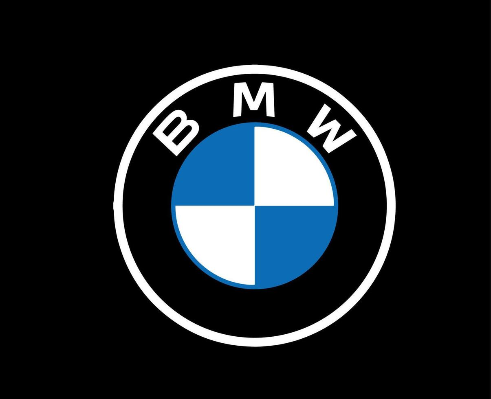

Aprenda criando
QUAIS SÃO OS 12 CARROS MAIS FAMOSOS DA BMW?
Combinando sofisticação e alta performance, a BMW revolucionou o mercado com carros de luxo e motores lendários.
Descubra os modelos mais icônicos que conquistaram as pistas, as estradas e o coração dos apaixonados por velocidade ao redor do mundo.

Por que são especiais?
Onde a inovação encontra o puro prazer de dirigir
DNA das Pistas
Os modelos mais famosos da divisão M da BMW nasceram para vencer nas pistas. Seu valor vem de tecnologias inovadoras de alta performance.
Raridade Absoluta
Muitos desses modelos BMW tiveram produções limitadas a pouquíssimas unidades ou são clássicos atemporais e altamente exclusivos.
Arte de Investimento
Carros que transcendem o mercado automotivo, tornando-se peças de coleção altamente cobiçadas por investidores e entusiastas mundiais.
Biblioteca de Carros